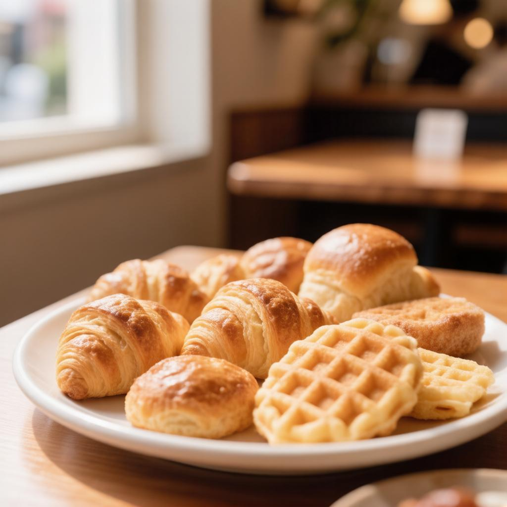
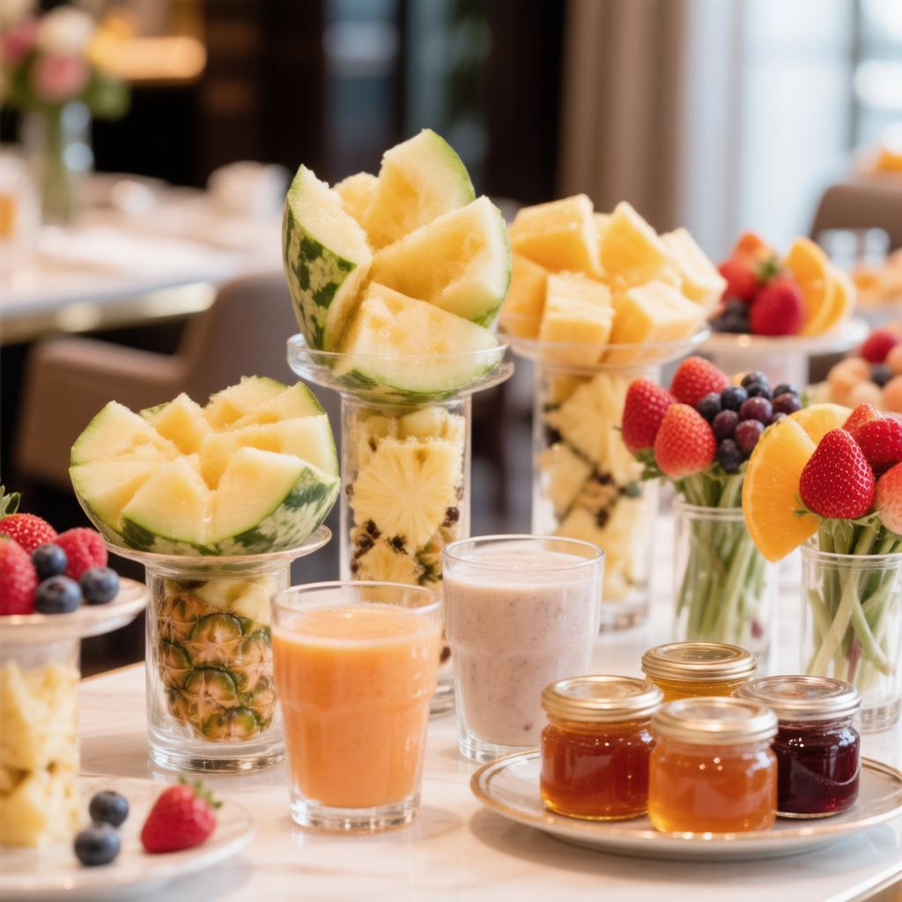
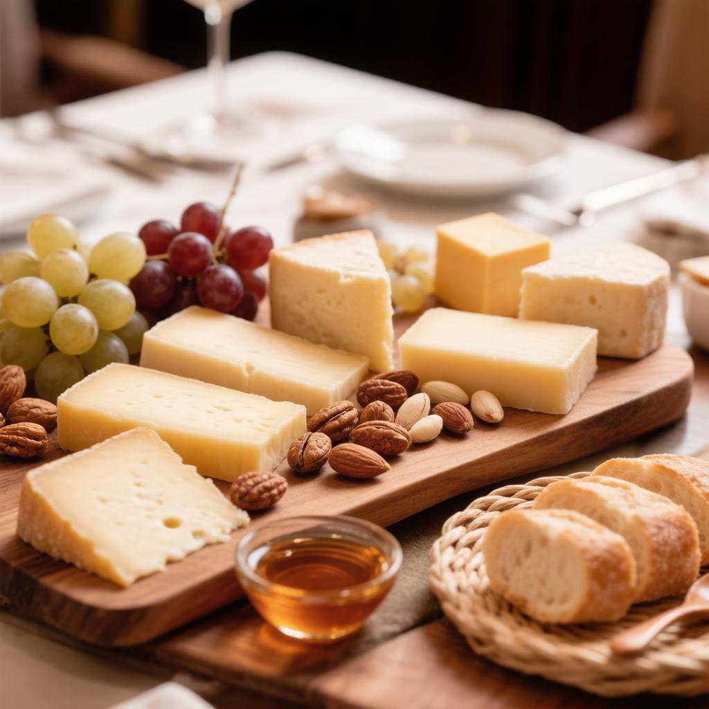
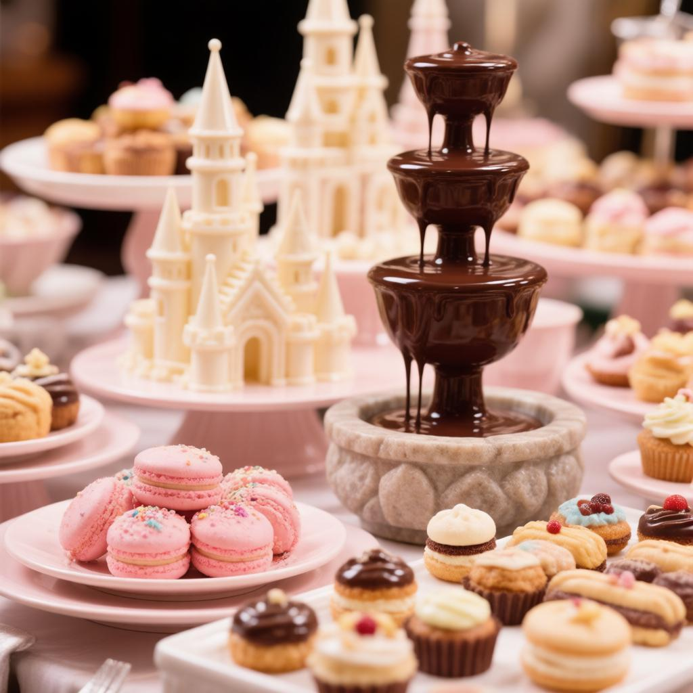
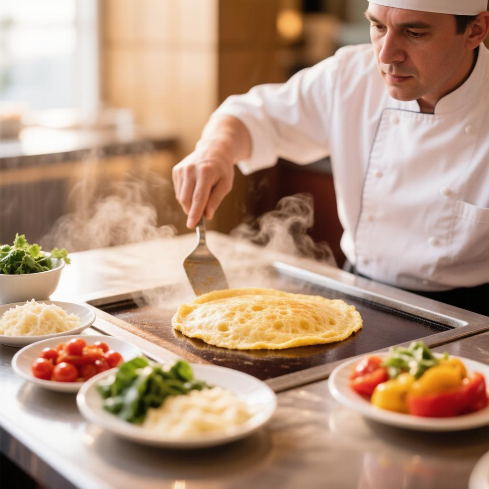
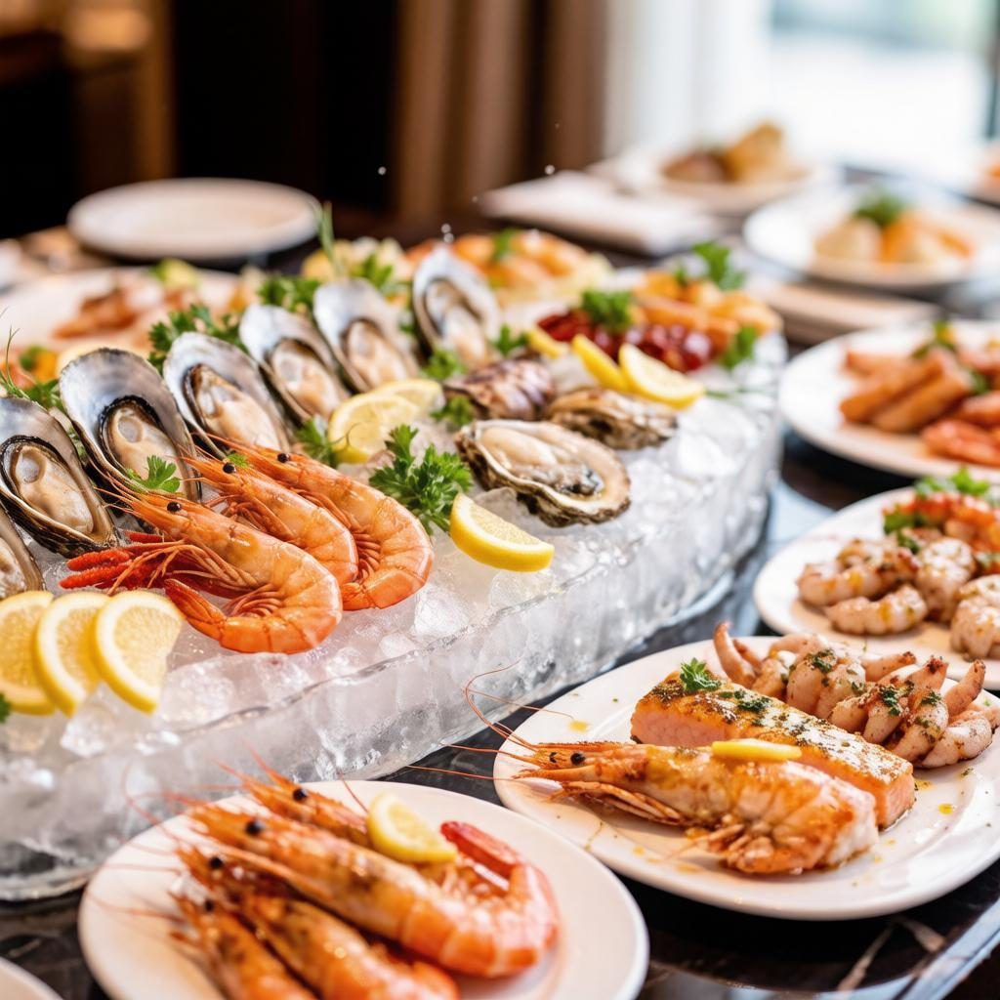
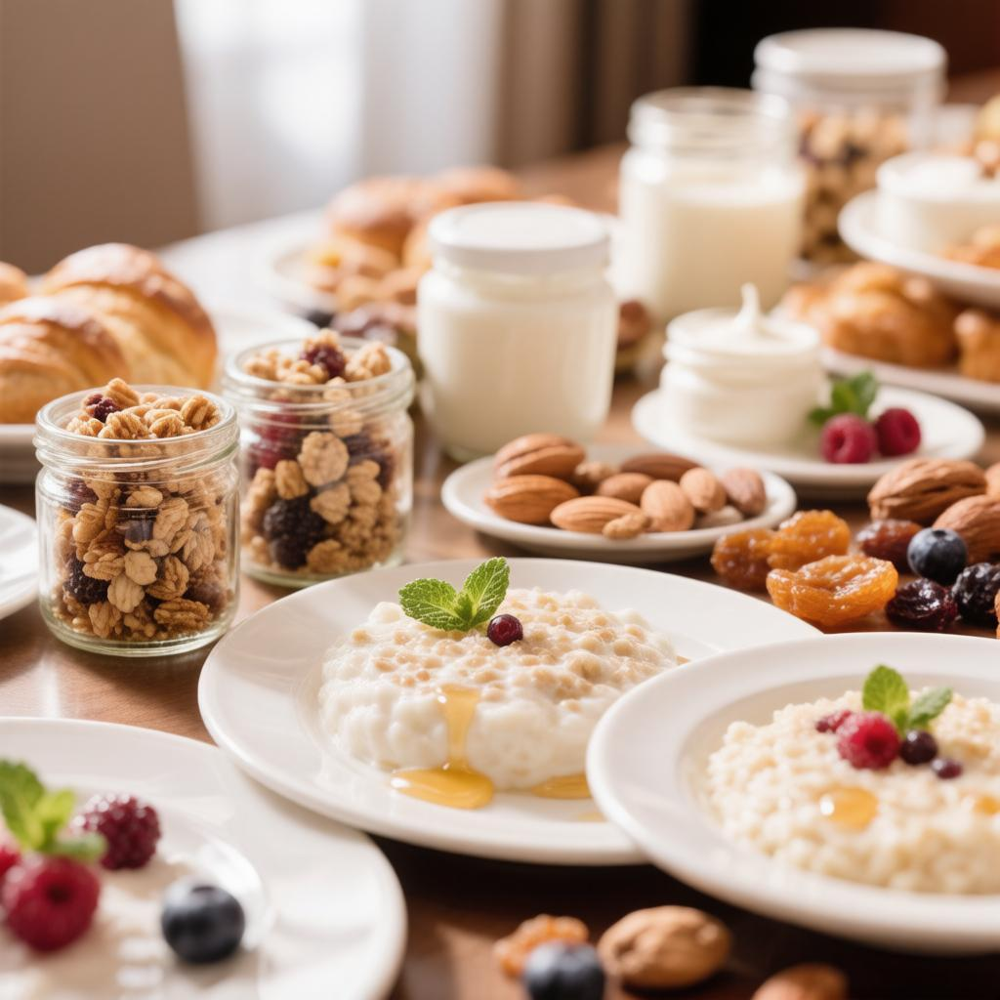
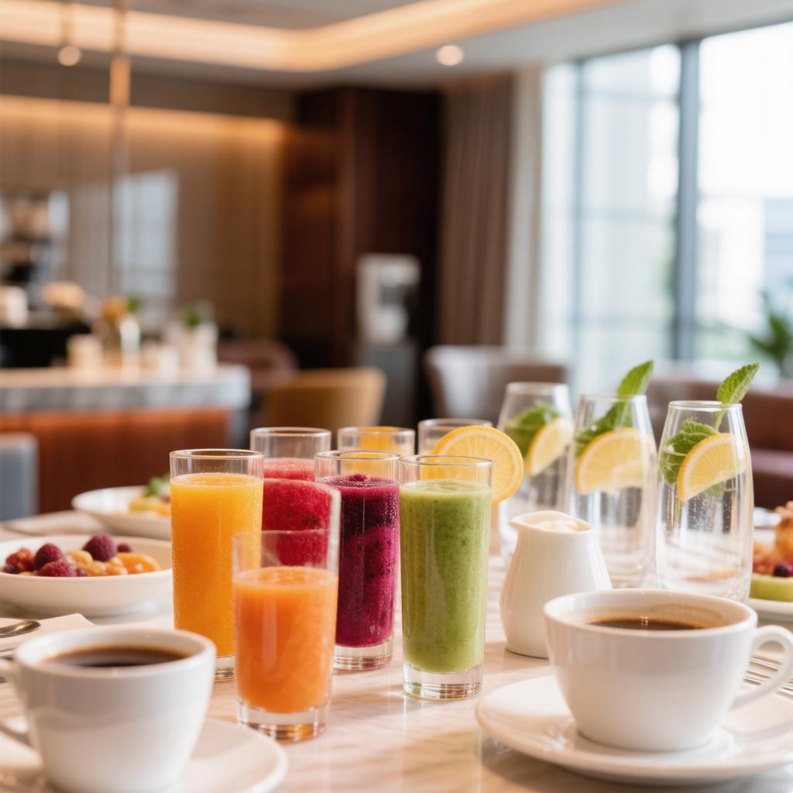

Что подаём к завтраку
Каждое утро шведский стол превращается в розовую витрину. Вот лишь часть того, что ждёт вас.

Выпечка и хлеб
- Круассаны с миндалём и малиной
- Бриоши и шоколадные булки
- Свежие багеты и фокачча
- Вафли, оладьи, панкейки

Фрукты и ягоды
- Тропические фрукты и ягоды
- Ягодные смузи и фреши
- Домашние джемы и мёд
- Йогурты и гранола-бары

Горячее и сыр
- Омлеты и фриттата под заказ
- Французские сыры и колбасы
- Блинчики и вафли
- Морепродукты на гриле

Сладкое и напитки
- Розовые макароны и эклеры
- Торты-замки и пирожные
- Шоколадный фонтан
- Кофе, какао и свежевыжатые соки

Живая станция омлета
- Пышный омлет по заказу
- Фриттата и яичница с беконом
- Начинки: сыр, овощи, грибы
- Готовится на ваших глазах

Морепродукты и гриль
- Свежие креветки и мидии
- Устрицы на льду с лимоном
- Рыба и лосось на гриле
- Французские деликатесы

Каши и гранола
- Молочные каши с ягодами и мёдом
- Гранола-бары и йогурты
- Орехи, сухофрукты, семечки
- Полезный сытный завтрак

Напитки и фреши
- Свежевыжатые соки и смузи
- Кофе, какао и чай
- Вода с лимоном и мятой
- Физ-напитки для детей